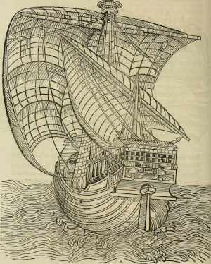

Images can be included like below. All are from the book Bibliotheca Spenceriana; or, A descriptive catalogue of the library of George John, earl Spencer.
{{imgframe |ref=death |file=dance_of_death.jpg |title=Dance of Death. Imago Mortis.}}
{{imgframe |ref=rider |file=rider.jpg |title=Horses of yore.}}
{{imgframe |ref=ship |file=ship.jpg |title=Detailed ship.}}


They can be referenced by their enumerated number using {{ref |ref=id}}; The ship is Figure 3 ({{ref |ref=ship}}) while the image of the Dance of Death is Figure 1 ({{ref |ref=death}}) and the image of the rider is Figure 2 ({{ref |ref=rider}}).
Images can also be included inline; {{img |file=smiley.png |title=:)}} results in this:
LaTeX math equations are supported, and they will be turned into MathML and included into the paragraph. There are two commands with which math can be included, {{math}} for (shorter) inline math snippets, and {{beginmath}} followed by {{endmath}} for multiline equations.
Inline equations can be included using {{math}}, like this one: {{math |eq=a_1 + a_2 + ... + a_n = \sum_{i = 1}^n a_{i}\,}}, which is typeset into: . Note that for technical reasons, an equation cannot end with "}", hence \, is inserted at the end of the equation, which adds a tiny space. Using {{math}} will automatically make the equation compacted, since it is intended for math that is embedded inside the paragraph, and thus needs to take less space.
Longer, or multi-line or more complex equations can be included by placing the tex markup between {{beginmath}} and {{endmath}}. This will automatically make the math be typeset in a more spacious way; see how the following is typeset compared to the inlined equation of the previous paragraph. The characters of the two equations are identical, but they are typeset differently.
{{beginmath}}
a_1 + a_2 + ... + a_n = \sum_{i = 1}^n a_{i}\,
{{endmath}}
Under the hood, {{math}} will be turned into {{beginmath}} and {{endmath}}.
As mentioned, using {{math}} will typeset equations compacted (using \textstyle of LaTeX). Using {{beginmath}}, equations will by default be typeset with \displaystyle. This can be overridden by providing the style argument to {{beginmath}}, like this:
{{beginmath |style=textstyle}}
\sum_{i=1}^n i = \frac{n(n+1)}{2}\,
{{endmath}}
Equations can be referenced by including a {{mathref}} in the tex markup, like this:
{{beginmath}}
e^{i\theta} = \cos\theta + i\sin \theta {{mathref |ref=EulersFormula}}
{{endmath}}
Equation (1) above is known as Euler's Formula, and the number is referenced by {{ref |ref=EulersFormula}}. We can evaluate Euler's Formula for ({{math |eq=\theta = \pi}}):
{{beginmath}}
\begin{align}
e^{i\pi} &= \cos{\pi} + i \sin{\pi} &{{mathref |ref=Pi1}}\\
e^{i\pi} &= -1 + i\cdot 0 &{{mathref |ref=Pi2}}\\
e^{i\pi} &= -1 &{{mathref |ref=Pi3}}\\
e^{i\pi} +1 &= 0 &{{mathref |ref=Pi4}}
\end{align}
{{endmath}}
In (2) ({{ref |ref=Pi1}}) we insert ({{math |eq=\pi}}) into (1) ({{ref |ref=EulersFormula}}), i.e. Euler's Formula. In (3) ({{ref |ref=Pi2}}) and (4) ({{ref |ref=Pi3}}) we solve the equation, and finally in (5) ({{ref |ref=Pi4}}), we obtain what is known as Euler's Identity, sometimes called "the most beautiful equation in mathematics".
Of course, cool kids use ({{math |eq=\tau}}) instead of ({{math |eq=\pi}}), see the Tau Manifesto. Then we instead get the ({{math |eq=\tau}}) version of Euler's Identity:
{{beginmath}}
\begin{align}
e^{i\tau} &= \cos{2\pi} + i \sin{2\pi} &{{mathref |ref=Tau1}}\\
e^{i\tau} &= 1 + i \cdot 0 &{{mathref |ref=Tau2}}\\
e^{i\tau} &= 1 &{{mathref |ref=Tau3}}
\end{align}
{{endmath}}
In (6) ({{ref |ref=Tau1}}) we solve equation (1) ({{ref |ref=EulersFormula}}) for ({{math |eq=\tau = 2\pi}}), and in (7) ({{ref |ref=Tau2}}) we simplify. We then obtain the ({{math |eq=\tau}}) version of Euler's Identity in (8) ({{ref |ref=Tau3}}).
Below is a gallery with one single thumbnail. Just include a {{thumbnail}}, and the engine will do the rest. The title of the thumbnail will be the title of the gallery (here the title is "Pretty candles:", which is included in the text before the gallery).
{{thumbnail |title=Pretty candles: |small=candles_small.png |large=candles.jpg}} {{comment |text=Source: https://commons.wikimedia.org/wiki/File:Liesel_22-12-2012_4._Advent.jpg}}
Pretty candles:
If you want many thumbnails in a gallery, more work is done behind the scenes. The line before the first {{thumbnail}} should begin with a {{thumbnails}}, giving an explanatory title to the images.
{{thumbnails |text=Many thumbnails in a gallery below:}}
{{thumbnail |title=Thumbnail two: |small=candles_small.png |large=candles.jpg}} {{comment |text=Source: https://commons.wikimedia.org/wiki/File:Liesel_22-12-2012_4._Advent.jpg}}
{{thumbnail |title=Thumbnail three: |small=trees_small.png |large=trees.png}} {{comment |text=Source: https://commons.wikimedia.org/wiki/File:Laudtee_Meenikunnos.jpg}}
Many thumbnails in a gallery below: